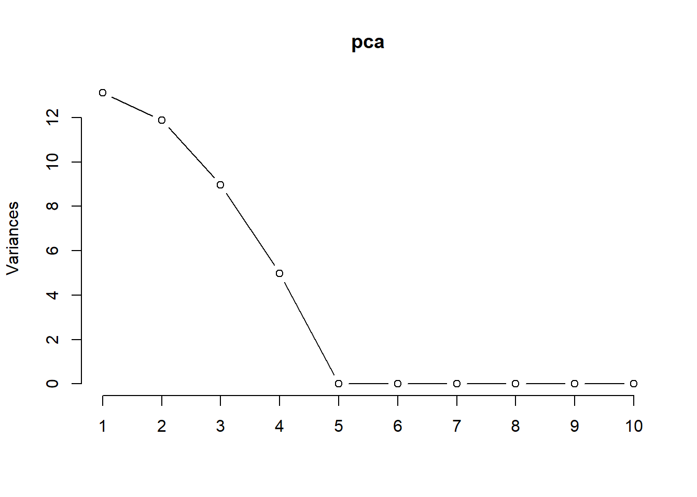

packages <- c(
"tibble",
"dplyr",
"readr",
"tidyr",
"purrr",
"broom",
"magrittr",
"corrplot",
"car"
)
# renv::install(packages)
sapply(packages, require, character.only=T)
Important
Please read the instructions carefully before submitting your assignment.
- This assignment requires you to only upload a
PDFfile on Canvas - Don’t collapse any code cells before submitting.
- Remember to make sure all your code output is rendered properly before uploading your submission.
⚠️ Please add your name to the author information in the frontmatter before submitting your assignment ⚠️
In this assignment, we will perform various tasks involving principal component analysis (PCA), principal component regression, and dimensionality reduction.
We will need the following packages:
Question 1
70 points
Principal component anlaysis and variable selection
1.1 (5 points)
The data folder contains a spending.csv dataset which is an illustrative sample of monthly spending data for a group of \(5000\) people across a variety of categories. The response variable, income, is their monthly income, and objective is to predict the income for a an individual based on their spending patterns.
Read the data file as a tibble in R. Preprocess the data such that:
- the variables are of the right data type, e.g., categorical variables are encoded as factors
- all column names to lower case for consistency
- Any observations with missing values are dropped
path <- "data/spending.csv"
df <- ... # Insert your code herelibrary(tibble)
library(dplyr)
library(readr)
path <- "data/spending.csv"
df <- read_csv(path) %>%
mutate_if(is.character, as.factor) %>%
rename_all(tolower) %>%
drop_na() Rows: 5000 Columns: 40
── Column specification ────────────────────────────────────────────────────────
Delimiter: ","
dbl (40): accessories, accommodation, alcohol, audio_equipment, beverages, b...
ℹ Use `spec()` to retrieve the full column specification for this data.
ℹ Specify the column types or set `show_col_types = FALSE` to quiet this message.1.2 (5 points)
Visualize the correlation between the variables using the corrplot() function. What do you observe? What does this mean for the model?
df_x %>% ... # Insert your code herelibrary(corrplot)corrplot 0.92 loadedcorrelation_matrix <- cor(df %>% select(-one_of("income")))
corrplot(correlation_matrix, method = "circle")1.3 (5 points)
Run a linear regression model to predict the income variable using the remaining predictors. Interpret the coefficients and summarize your results.
... # Insert your code herelibrary(car)Loading required package: carData
Attaching package: 'car'The following object is masked from 'package:purrr':
someThe following object is masked from 'package:dplyr':
recodemodel <- lm(income ~ ., data = df)
summary(model)
Call:
lm(formula = income ~ ., data = df)
Residuals:
Min 1Q Median 3Q Max
-8.6875 -1.6569 0.0427 1.6633 9.5623
Coefficients:
Estimate Std. Error t value Pr(>|t|)
(Intercept) -0.077509 0.121730 -0.637 0.524330
accessories 0.299876 0.031786 9.434 < 2e-16 ***
accommodation 0.113632 0.031262 3.635 0.000281 ***
alcohol -0.005958 0.033266 -0.179 0.857873
audio_equipment 0.602004 0.033483 17.979 < 2e-16 ***
beverages 0.043335 0.034111 1.270 0.204000
books 0.070530 0.033238 2.122 0.033892 *
cameras 0.461827 0.033572 13.756 < 2e-16 ***
car_rentals 0.124875 0.032809 3.806 0.000143 ***
clothing 0.504228 0.026055 19.352 < 2e-16 ***
coffee_shops 0.048839 0.034909 1.399 0.161864
dairy_products 0.024548 0.032715 0.750 0.453082
desktops 0.391673 0.033393 11.729 < 2e-16 ***
electronics 1.079627 0.030035 35.946 < 2e-16 ***
fast_food 0.077531 0.033014 2.348 0.018893 *
food_delivery -0.004903 0.034257 -0.143 0.886188
fruits 0.059089 0.033321 1.773 0.076237 .
groceries 0.077694 0.031601 2.459 0.013981 *
gym_memberships 0.141168 0.033410 4.225 2.43e-05 ***
jewelry 0.213726 0.032834 6.509 8.30e-11 ***
laptops 0.594328 0.032548 18.260 < 2e-16 ***
magazines 0.080762 0.033694 2.397 0.016571 *
meat 0.081262 0.032367 2.511 0.012083 *
movies 0.110296 0.033326 3.310 0.000941 ***
music 0.159925 0.033398 4.788 1.73e-06 ***
outdoor_activities 0.087846 0.032356 2.715 0.006651 **
public_transportation 0.061138 0.033022 1.851 0.064169 .
restaurant_meals 0.066129 0.033225 1.990 0.046611 *
seafood 0.061318 0.033786 1.815 0.069596 .
shoes 0.463185 0.029613 15.641 < 2e-16 ***
smartphones 0.780150 0.031538 24.737 < 2e-16 ***
snacks 0.007464 0.033229 0.225 0.822290
software 0.408500 0.034102 11.979 < 2e-16 ***
sports_equipment 0.033328 0.033969 0.981 0.326574
streaming_services 0.150614 0.031902 4.721 2.41e-06 ***
tablets 0.637266 0.033133 19.234 < 2e-16 ***
travel 0.129161 0.031457 4.106 4.09e-05 ***
vegetables -0.066111 0.033162 -1.994 0.046257 *
video_games 0.863309 0.031392 27.501 < 2e-16 ***
watches 0.145853 0.033467 4.358 1.34e-05 ***
---
Signif. codes: 0 '***' 0.001 '**' 0.01 '*' 0.05 '.' 0.1 ' ' 1
Residual standard error: 2.434 on 4960 degrees of freedom
Multiple R-squared: 0.9999, Adjusted R-squared: 0.9999
F-statistic: 1.834e+06 on 39 and 4960 DF, p-value: < 2.2e-161.3 (5 points)
Diagnose the model using the vif() function. What do you observe? What does this mean for the model?
... # Insert your code herevif_values <- vif(model)
print(vif_values) accessories accommodation alcohol
152.06821 681.15504 387.23376
audio_equipment beverages books
1755.56441 914.69186 192.91781
cameras car_rentals clothing
785.43147 423.55906 282.25143
coffee_shops dairy_products desktops
425.39644 2336.74847 776.75697
electronics fast_food food_delivery
3927.16511 1519.85171 921.68162
fruits groceries gym_memberships
1550.05678 3136.80325 438.30224
jewelry laptops magazines
72.38215 1658.76990 198.53619
meat movies music
2284.43676 437.28082 437.03990
outdoor_activities public_transportation restaurant_meals
411.17302 427.77815 1540.26240
seafood shoes smartphones
1594.08027 233.33301 2772.27822
snacks software sports_equipment
868.24282 810.28919 201.00255
streaming_services tablets travel
709.25592 1718.78339 690.69616
vegetables video_games watches
1536.40686 2745.64421 75.56457 1.4 (5 points)
Perform PCA using the princomp function in R. Print the summary of the PCA object.
pca <- ... # Insert your code here
... # Insert your code herepca <- prcomp(df[, -which(names(df) == "income")], scale. = TRUE)
summary(pca) Importance of components:
PC1 PC2 PC3 PC4 PC5 PC6 PC7
Standard deviation 3.620 3.4480 2.9940 2.2289 0.11257 0.09606 0.07083
Proportion of Variance 0.336 0.3048 0.2298 0.1274 0.00032 0.00024 0.00013
Cumulative Proportion 0.336 0.6409 0.8707 0.9981 0.99842 0.99866 0.99879
PC8 PC9 PC10 PC11 PC12 PC13 PC14
Standard deviation 0.06915 0.06702 0.06532 0.05099 0.04981 0.04762 0.04699
Proportion of Variance 0.00012 0.00012 0.00011 0.00007 0.00006 0.00006 0.00006
Cumulative Proportion 0.99891 0.99902 0.99913 0.99920 0.99926 0.99932 0.99938
PC15 PC16 PC17 PC18 PC19 PC20 PC21
Standard deviation 0.04611 0.04590 0.04553 0.04517 0.03944 0.03586 0.03505
Proportion of Variance 0.00005 0.00005 0.00005 0.00005 0.00004 0.00003 0.00003
Cumulative Proportion 0.99943 0.99949 0.99954 0.99959 0.99963 0.99966 0.99970
PC22 PC23 PC24 PC25 PC26 PC27 PC28
Standard deviation 0.03461 0.03435 0.03298 0.03240 0.03136 0.02977 0.02509
Proportion of Variance 0.00003 0.00003 0.00003 0.00003 0.00003 0.00002 0.00002
Cumulative Proportion 0.99973 0.99976 0.99979 0.99981 0.99984 0.99986 0.99988
PC29 PC30 PC31 PC32 PC33 PC34 PC35
Standard deviation 0.02460 0.02427 0.02375 0.02334 0.02283 0.02119 0.01969
Proportion of Variance 0.00002 0.00002 0.00001 0.00001 0.00001 0.00001 0.00001
Cumulative Proportion 0.99989 0.99991 0.99992 0.99994 0.99995 0.99996 0.99997
PC36 PC37 PC38 PC39
Standard deviation 0.01938 0.01743 0.01678 0.01464
Proportion of Variance 0.00001 0.00001 0.00001 0.00001
Cumulative Proportion 0.99998 0.99999 0.99999 1.000001.5 (5 points)
Make a screeplot of the proportion of variance explained by each principal component. How many principal components would you choose to keep? Why?
... # Insert your code herescreeplot(pca, type = "lines")
1.6 (5 points)
By setting any factor loadings below \(0.2\) to \(0\), summarize the factor loadings for the principal components that you chose to keep.
clean_loadings <- ... # Insert your code hereloadings <- pca$rotation
clean_loadings <- apply(loadings, 2, function(x) ifelse(abs(x) < 0.2, 0, x))
clean_loadings <- as.data.frame(clean_loadings)
summary(clean_loadings) PC1 PC2 PC3 PC4
Min. :-0.26598 Min. :0.00000 Min. :0.00000 Min. :0.00000
1st Qu.:-0.26586 1st Qu.:0.00000 1st Qu.:0.00000 1st Qu.:0.00000
Median : 0.00000 Median :0.00000 Median :0.00000 Median :0.00000
Mean :-0.08863 Mean :0.08513 Mean :0.07652 Mean :0.05731
3rd Qu.: 0.00000 3rd Qu.:0.27647 3rd Qu.:0.00000 3rd Qu.:0.00000
Max. : 0.00000 Max. :0.27685 Max. :0.33165 Max. :0.44775
PC5 PC6 PC7
Min. :-0.740563 Min. :-0.4948741 Min. :-0.821318
1st Qu.: 0.000000 1st Qu.: 0.0000000 1st Qu.: 0.000000
Median : 0.000000 Median : 0.0000000 Median : 0.000000
Mean :-0.001826 Mean : 0.0000726 Mean :-0.002436
3rd Qu.: 0.000000 3rd Qu.: 0.0000000 3rd Qu.: 0.000000
Max. : 0.669352 Max. : 0.5851501 Max. : 0.467742
PC8 PC9 PC10 PC11
Min. :-0.771848 Min. :-0.537467 Min. :0.00000 Min. :-0.538441
1st Qu.: 0.000000 1st Qu.: 0.000000 1st Qu.:0.00000 1st Qu.: 0.000000
Median : 0.000000 Median : 0.000000 Median :0.00000 Median : 0.000000
Mean :-0.005287 Mean :-0.005085 Mean :0.03787 Mean : 0.006383
3rd Qu.: 0.000000 3rd Qu.: 0.000000 3rd Qu.:0.00000 3rd Qu.: 0.000000
Max. : 0.565668 Max. : 0.692994 Max. :0.59806 Max. : 0.787380
PC12 PC13 PC14
Min. :-0.579541 Min. :-0.336898 Min. :-0.5446377
1st Qu.: 0.000000 1st Qu.: 0.000000 1st Qu.: 0.0000000
Median : 0.000000 Median : 0.000000 Median : 0.0000000
Mean : 0.004501 Mean :-0.003115 Mean :-0.0009384
3rd Qu.: 0.000000 3rd Qu.: 0.000000 3rd Qu.: 0.0000000
Max. : 0.755064 Max. : 0.814804 Max. : 0.7467035
PC15 PC16 PC17 PC18
Min. :-0.683116 Min. :-0.806816 Min. :-0.602347 Min. :-0.70816
1st Qu.: 0.000000 1st Qu.: 0.000000 1st Qu.: 0.000000 1st Qu.: 0.00000
Median : 0.000000 Median : 0.000000 Median : 0.000000 Median : 0.00000
Mean : 0.004347 Mean :-0.007643 Mean :-0.002177 Mean :-0.02783
3rd Qu.: 0.000000 3rd Qu.: 0.000000 3rd Qu.: 0.000000 3rd Qu.: 0.00000
Max. : 0.607434 Max. : 0.298732 Max. : 0.525169 Max. : 0.29443
PC19 PC20 PC21 PC22
Min. :-0.51848 Min. :-0.40876 Min. :-0.5261212 Min. :-0.656844
1st Qu.: 0.00000 1st Qu.: 0.00000 1st Qu.: 0.0000000 1st Qu.: 0.000000
Median : 0.00000 Median : 0.00000 Median : 0.0000000 Median : 0.000000
Mean :-0.01196 Mean : 0.00123 Mean : 0.0009883 Mean : 0.003128
3rd Qu.: 0.00000 3rd Qu.: 0.00000 3rd Qu.: 0.0000000 3rd Qu.: 0.000000
Max. : 0.26184 Max. : 0.76001 Max. : 0.5947233 Max. : 0.592783
PC23 PC24 PC25 PC26
Min. :-0.717261 Min. :-0.77145 Min. :-0.769133 Min. :-0.308349
1st Qu.: 0.000000 1st Qu.: 0.00000 1st Qu.: 0.000000 1st Qu.: 0.000000
Median : 0.000000 Median : 0.00000 Median : 0.000000 Median : 0.000000
Mean :-0.005734 Mean :-0.01071 Mean : 0.001659 Mean : 0.008854
3rd Qu.: 0.000000 3rd Qu.: 0.00000 3rd Qu.: 0.000000 3rd Qu.: 0.000000
Max. : 0.462320 Max. : 0.56745 Max. : 0.518733 Max. : 0.539664
PC27 PC28 PC29 PC30
Min. :-0.27415 Min. :-0.554410 Min. :-0.561347 Min. :-0.506343
1st Qu.: 0.00000 1st Qu.: 0.000000 1st Qu.: 0.000000 1st Qu.: 0.000000
Median : 0.00000 Median : 0.000000 Median : 0.000000 Median : 0.000000
Mean : 0.01221 Mean :-0.004509 Mean : 0.002872 Mean : 0.008483
3rd Qu.: 0.00000 3rd Qu.: 0.000000 3rd Qu.: 0.000000 3rd Qu.: 0.000000
Max. : 0.52294 Max. : 0.723689 Max. : 0.550394 Max. : 0.837194
PC31 PC32 PC33
Min. :-0.3779785 Min. :-0.743261 Min. :-0.605918
1st Qu.: 0.0000000 1st Qu.: 0.000000 1st Qu.: 0.000000
Median : 0.0000000 Median : 0.000000 Median : 0.000000
Mean :-0.0002318 Mean : 0.005542 Mean :-0.002821
3rd Qu.: 0.0000000 3rd Qu.: 0.000000 3rd Qu.: 0.000000
Max. : 0.7480133 Max. : 0.469667 Max. : 0.727543
PC34 PC35 PC36
Min. :-0.605517 Min. :-0.415462 Min. :-0.757584
1st Qu.: 0.000000 1st Qu.: 0.000000 1st Qu.: 0.000000
Median : 0.000000 Median : 0.000000 Median : 0.000000
Mean :-0.008035 Mean : 0.003669 Mean :-0.003335
3rd Qu.: 0.000000 3rd Qu.: 0.000000 3rd Qu.: 0.000000
Max. : 0.279453 Max. : 0.526607 Max. : 0.627514
PC37 PC38 PC39
Min. :-0.680988 Min. :-0.28635 Min. :-0.896798
1st Qu.: 0.000000 1st Qu.: 0.00000 1st Qu.: 0.000000
Median : 0.000000 Median : 0.00000 Median : 0.000000
Mean : 0.000629 Mean : 0.01014 Mean :-0.008092
3rd Qu.: 0.000000 3rd Qu.: 0.00000 3rd Qu.: 0.000000
Max. : 0.705519 Max. : 0.89907 Max. : 0.295363 Visualize the factor loadings.
... # Insert your code herelibrary(ggplot2)
library(tidyr)
long_loadings <- pivot_longer(clean_loadings, cols = everything(), names_to = 'Variable', values_to = 'Loading')
ggplot(long_loadings, aes(x = Variable, y = Loading, fill = Variable)) +
geom_bar(stat = "identity") +
theme_minimal() +
coord_flip() +
labs(title = "Factor Loadings Visualization", x = "Principal Component", y = "Loading")1.7 (15 points)
Based on the factor loadings, what do you think the principal components represent?
Provide an interpreation for each principal component you chose to keep.
#Principal component analysis is like finding the best angle to take a collective photo of a group of items so that you can see the most obvious differences at a glance. Each angle, or principal component, reveals a different characteristic between the items: the first angle shows the most fundamental difference, the second angle the second most important difference, and so on.1.8 (10 points)
Create a new data frame with the original response variable income and the principal components you chose to keep. Call this data frame df_pca.
... # Insert your code herenum_components <- 3
df_pca <- data.frame(income = df$income, pca$x[, 1:num_components])Fit a regression model to predict the income variable using the principal components you chose to keep. Interpret the coefficients and summarize your results.
... # Insert your code heremodel_pca <- lm(income ~ ., data = df_pca)
summary(model_pca)
Call:
lm(formula = income ~ ., data = df_pca)
Residuals:
Min 1Q Median 3Q Max
-44.345 -18.599 -0.293 18.730 47.846
Coefficients:
Estimate Std. Error t value Pr(>|t|)
(Intercept) 628.17783 0.30371 2068.4 <2e-16 ***
PC1 -13.33704 0.08390 -159.0 <2e-16 ***
PC2 -1.16315 0.08809 -13.2 <2e-16 ***
PC3 95.59503 0.10145 942.3 <2e-16 ***
---
Signif. codes: 0 '***' 0.001 '**' 0.01 '*' 0.05 '.' 0.1 ' ' 1
Residual standard error: 21.48 on 4996 degrees of freedom
Multiple R-squared: 0.9946, Adjusted R-squared: 0.9946
F-statistic: 3.044e+05 on 3 and 4996 DF, p-value: < 2.2e-16Compare the results of the regression model in 1.3 and 1.9. What do you observe? What does this mean for the model?
summary(model)
Call:
lm(formula = income ~ ., data = df)
Residuals:
Min 1Q Median 3Q Max
-8.6875 -1.6569 0.0427 1.6633 9.5623
Coefficients:
Estimate Std. Error t value Pr(>|t|)
(Intercept) -0.077509 0.121730 -0.637 0.524330
accessories 0.299876 0.031786 9.434 < 2e-16 ***
accommodation 0.113632 0.031262 3.635 0.000281 ***
alcohol -0.005958 0.033266 -0.179 0.857873
audio_equipment 0.602004 0.033483 17.979 < 2e-16 ***
beverages 0.043335 0.034111 1.270 0.204000
books 0.070530 0.033238 2.122 0.033892 *
cameras 0.461827 0.033572 13.756 < 2e-16 ***
car_rentals 0.124875 0.032809 3.806 0.000143 ***
clothing 0.504228 0.026055 19.352 < 2e-16 ***
coffee_shops 0.048839 0.034909 1.399 0.161864
dairy_products 0.024548 0.032715 0.750 0.453082
desktops 0.391673 0.033393 11.729 < 2e-16 ***
electronics 1.079627 0.030035 35.946 < 2e-16 ***
fast_food 0.077531 0.033014 2.348 0.018893 *
food_delivery -0.004903 0.034257 -0.143 0.886188
fruits 0.059089 0.033321 1.773 0.076237 .
groceries 0.077694 0.031601 2.459 0.013981 *
gym_memberships 0.141168 0.033410 4.225 2.43e-05 ***
jewelry 0.213726 0.032834 6.509 8.30e-11 ***
laptops 0.594328 0.032548 18.260 < 2e-16 ***
magazines 0.080762 0.033694 2.397 0.016571 *
meat 0.081262 0.032367 2.511 0.012083 *
movies 0.110296 0.033326 3.310 0.000941 ***
music 0.159925 0.033398 4.788 1.73e-06 ***
outdoor_activities 0.087846 0.032356 2.715 0.006651 **
public_transportation 0.061138 0.033022 1.851 0.064169 .
restaurant_meals 0.066129 0.033225 1.990 0.046611 *
seafood 0.061318 0.033786 1.815 0.069596 .
shoes 0.463185 0.029613 15.641 < 2e-16 ***
smartphones 0.780150 0.031538 24.737 < 2e-16 ***
snacks 0.007464 0.033229 0.225 0.822290
software 0.408500 0.034102 11.979 < 2e-16 ***
sports_equipment 0.033328 0.033969 0.981 0.326574
streaming_services 0.150614 0.031902 4.721 2.41e-06 ***
tablets 0.637266 0.033133 19.234 < 2e-16 ***
travel 0.129161 0.031457 4.106 4.09e-05 ***
vegetables -0.066111 0.033162 -1.994 0.046257 *
video_games 0.863309 0.031392 27.501 < 2e-16 ***
watches 0.145853 0.033467 4.358 1.34e-05 ***
---
Signif. codes: 0 '***' 0.001 '**' 0.01 '*' 0.05 '.' 0.1 ' ' 1
Residual standard error: 2.434 on 4960 degrees of freedom
Multiple R-squared: 0.9999, Adjusted R-squared: 0.9999
F-statistic: 1.834e+06 on 39 and 4960 DF, p-value: < 2.2e-16summary(model_pca)
Call:
lm(formula = income ~ ., data = df_pca)
Residuals:
Min 1Q Median 3Q Max
-44.345 -18.599 -0.293 18.730 47.846
Coefficients:
Estimate Std. Error t value Pr(>|t|)
(Intercept) 628.17783 0.30371 2068.4 <2e-16 ***
PC1 -13.33704 0.08390 -159.0 <2e-16 ***
PC2 -1.16315 0.08809 -13.2 <2e-16 ***
PC3 95.59503 0.10145 942.3 <2e-16 ***
---
Signif. codes: 0 '***' 0.001 '**' 0.01 '*' 0.05 '.' 0.1 ' ' 1
Residual standard error: 21.48 on 4996 degrees of freedom
Multiple R-squared: 0.9946, Adjusted R-squared: 0.9946
F-statistic: 3.044e+05 on 3 and 4996 DF, p-value: < 2.2e-161.10 (10 points)
Based on your interpretation of the principal components from Question 1.7, provide an interpretation of the regression model in Question 1.9.
#Comparing the results of the two models, I found that the model simplified through principal component analysis predicts revenue very well, and this approach also reduces the number of variables required. While such a model may not be easy to understand intuitively because it is built based on abstract features of the data, it provides us with a more refined and potentially more stable method of prediction.
Session Information
Print your R session information using the following command
sessionInfo()R version 4.3.3 (2024-02-29 ucrt)
Platform: x86_64-w64-mingw32/x64 (64-bit)
Running under: Windows 11 x64 (build 22631)
Matrix products: default
locale:
[1] LC_COLLATE=Chinese (Simplified)_China.utf8
[2] LC_CTYPE=Chinese (Simplified)_China.utf8
[3] LC_MONETARY=Chinese (Simplified)_China.utf8
[4] LC_NUMERIC=C
[5] LC_TIME=Chinese (Simplified)_China.utf8
time zone: America/New_York
tzcode source: internal
attached base packages:
[1] stats graphics grDevices utils datasets methods base
other attached packages:
[1] ggplot2_3.5.0 car_3.1-2 carData_3.0-5 corrplot_0.92 magrittr_2.0.3
[6] broom_1.0.5 purrr_1.0.2 tidyr_1.3.1 readr_2.1.5 dplyr_1.1.3
[11] tibble_3.2.1
loaded via a namespace (and not attached):
[1] bit_4.0.5 gtable_0.3.4 jsonlite_1.8.8 compiler_4.3.3
[5] crayon_1.5.2 tidyselect_1.2.1 parallel_4.3.3 scales_1.3.0
[9] yaml_2.3.8 fastmap_1.1.1 R6_2.5.1 labeling_0.4.3
[13] generics_0.1.3 knitr_1.45 backports_1.4.1 munsell_0.5.1
[17] pillar_1.9.0 tzdb_0.4.0 rlang_1.1.1 utf8_1.2.4
[21] xfun_0.43 bit64_4.0.5 cli_3.6.1 withr_3.0.0
[25] grid_4.3.3 digest_0.6.33 vroom_1.6.5 rstudioapi_0.16.0
[29] hms_1.1.3 lifecycle_1.0.4 vctrs_0.6.4 evaluate_0.23
[33] glue_1.6.2 farver_2.1.1 codetools_0.2-19 abind_1.4-5
[37] colorspace_2.1-0 fansi_1.0.5 rmarkdown_2.26 tools_4.3.3
[41] pkgconfig_2.0.3 htmltools_0.5.8